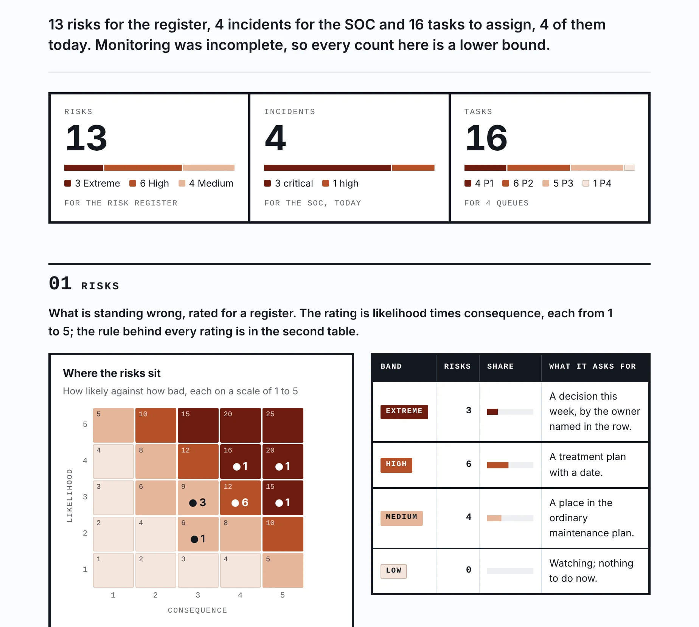

Une visibilité approfondie des réseaux OT et IT
Sachez ce qui s'est passé sur le réseau de votre usine, et quoi faire.
Historian lit l'historique réseau qu'un capteur a collecté dans votre usine et en fait un rapport et une liste de choses sur lesquelles agir.
- 3
- vues d'un même rapport : direction, responsables OT et ceux qui font le travail
- 22
- indicateurs d'activité d'agents IA dans le catalogue
- 3
- listes sur lesquelles agir : risques, incidents et tâches
- 0
- écriture sur le réseau de votre usine
01 Il ne fait qu'écouter
Rien n'est installé sur vos automates, et rien ne leur est envoyé.
Un point de capture dans l'usine enregistre une copie du trafic et la remet au capteur réseau de l'usine. Historian pose des questions au capteur avec un compte en lecture seule. Il n'écrit jamais sur le capteur ni sur le réseau, et il ne demande jamais les mots de passe qu'il voit passer, seulement combien il y en avait.
- Un capteur réseau par usine, chacun avec l'historique de cette usine
- Le capteur est Malcolm, la suite open source d'analyse du trafic réseau, et reste un système à part
- Aucun port à ouvrir vers internet : les capteurs et Historian se retrouvent sur un réseau privé
- Fonctionne sur votre propre serveur
- Réseau de l'usine
- Point de capture
- Capteur réseau
- Historian
- Risques, incidents, tâches
02 Peut-on se fier à ces chiffres ?
Le rapport commence par dire à quel point l'usine a pu être observée.
Une usine silencieuse parce que son capteur était en panne ne doit jamais se lire comme une usine où il ne s'est rien passé. Chaque rapport s'ouvre donc sur ce que les capteurs ont enregistré, où sont les trous, et si les chiffres qui suivent sont complets ou des minimums.
- Les points de capture qui livrent, et quand chacun l'a fait pour la dernière fois
- Les trous dans l'enregistrement, à la minute près
- Si le capteur refuse une question, le rapport se construit quand même et dit ce qui manque

03 Constats, par gravité
Chaque constat dit pourquoi il compte, quoi faire, et donne les preuves.
Un constat est une chose observée sur la période qui appelle une décision. Les plus graves viennent en premier, et chacun peut être relié aux enregistrements qui le fondent.
- Mots de passe envoyés en clair, contact avec des adresses malveillantes connues, appareils absents de l'inventaire
- Tendances par rapport à la période précédente, pour voir si le risque monte ou baisse
- PDF, Excel et PowerPoint depuis chaque page

04 Un rapport, trois lecteurs
La direction et les responsables OT posent des questions différentes. Chacun a sa propre vue.
La synthèse pour la direction répond en une page. La vue du responsable OT descend jusqu'à l'automate. Le rapport complet porte les preuves pour ceux qui font le travail.
Questions pour la direction
- Le risque monte-t-il ou baisse-t-il ?
- Savons-nous ce qu'il y a sur notre réseau ?
- Les zones du réseau sont-elles séparées ?
- Les appareils de l'usine parlent-ils à internet ?
- Qui a un accès distant à l'usine ?
- Des attaquants connus ont-ils été vus ?
- Un logiciel malveillant a-t-il circulé sur le réseau ?
- Quel comportement d'attaquant a été observé, en termes MITRE ATT&CK ?
Questions pour les responsables OT
- Qui a envoyé des commandes aux automates ?
- Qui parle à chaque automate ?
- Qu'est-ce qui a changé depuis la période précédente ?
- Les automates communiquent-ils sans erreur ?
- Quels protocoles industriels sont sur le réseau ?
- Que sait-on de chaque appareil de l'usine ?
- Quelles pratiques faibles ou obsolètes sont utilisées ?
- Quels logiciels et quelles versions ont été vus ?

05 Agents IA sur le réseau
Voyez quelles machines se comportent comme un programme et non comme une personne.
Les agents IA arrivent sur les réseaux de bureau et d'usine, approuvés ou non. Historian rassemble chaque machine qui présente un indicateur d'activité IA, ce qu'elle a fait sur le réseau et si elle figure sur votre liste approuvée.
- Un catalogue d'indicateurs, et ceux que chaque machine a présentés
- Les machines qui ont aussi agi sur le réseau sont signalées comme préoccupantes
- Des groupes de machines qui travaillent de concert

06 Conclusions
Le rapport se termine par trois listes sur lesquelles quelqu'un peut agir.
Les risques vont dans un registre, les incidents à un SOC, les tâches dans une file. Chaque évaluation porte la règle qui l'a produite, car ce sont de premières lectures d'une seule période de trafic, et la page le dit.
- Envoyez les trois listes à un registre SpaceRisk avec un seul bouton. Rien n'est envoyé tant qu'il n'est pas pressé
- Renvoyer met à jour ce qui avait été envoyé et ne crée jamais de seconde copie
- Exports pour un SIEM (OCSF) et pour Jira, ServiceNow ou une boîte aux lettres, plus Excel et PowerPoint
Pour le registre des risques
Risques
Une faiblesse durable, évaluée par la probabilité multipliée par la conséquence, chacune de 1 à 5, et confiée à un responsable.
Pour le SOC
Incidents
Quelque chose qui s'est produit et appelle une réponse maintenant.
Pour une file
Tâches
Un travail précis avec une file, une échéance et un moyen de savoir quand il est terminé.

07 Toutes les usines à la fois
Classez vos usines selon ce qu'il faut décider.
Avec plus d'une usine, vous les voyez côte à côte : laquelle demande de l'attention en premier, ce qui est vrai dans plusieurs face à ce qui est vrai dans une seule, et lesquelles n'ont pas pu être surveillées complètement.
- Chaque ligne ouvre le rapport de cette usine
- Les constats partagés par plusieurs usines sont présentés ensemble
- Ce qui n'est pas surveillé n'est jamais présenté comme calme

Voyez Historian lire votre propre réseau.
Parlez-nous de vos usines et nous vous montrerons le rapport d'abord sur des données simulées, puis sur les vôtres.